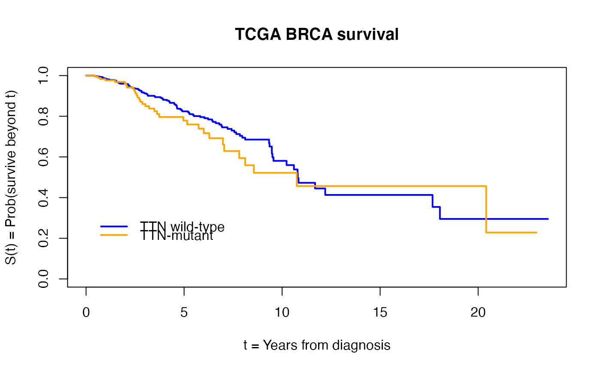

R/build_surv.R
build_surv_for_mut.Rduse curatedTCGAData to produce survival time structure and mutation matrix for a TCGA tumor type
build_surv_for_mut(project = "BRCA", min.numevents = 10)character(1), defaults to "BRCA"
numeric(1), defaults to 10; fail if there are fewer than this number of events overall
a list with components surv, coldata, and mutdata
observations lacking positive follow up time are silently omitted
requireNamespace("survival")
br = build_surv_for_mut("BRCA")
#> snapshotDate(): 2022-04-26
#> Working on: BRCA_Mutation-20160128
#> see ?curatedTCGAData and browseVignettes('curatedTCGAData') for documentation
#> loading from cache
#> require(“RaggedExperiment”)
#> Working on: BRCA_colData-20160128
#> see ?curatedTCGAData and browseVignettes('curatedTCGAData') for documentation
#> loading from cache
#> Working on: BRCA_metadata-20160128
#> see ?curatedTCGAData and browseVignettes('curatedTCGAData') for documentation
#> loading from cache
#> Working on: BRCA_sampleMap-20160128
#> see ?curatedTCGAData and browseVignettes('curatedTCGAData') for documentation
#> loading from cache
#> harmonizing input:
#> removing 14592 sampleMap rows not in names(experiments)
#> removing 121 colData rownames not in sampleMap 'primary'
has_TTN = apply(br$mutdata, 2, function(x) any(x == "TTN", na.rm=TRUE))
fi = survival::survfit(br$surv ~ has_TTN)
plot(fi, lwd=2, col=c("blue", "orange"), xlab = "t = Years from diagnosis", ylab="S(t) = Prob(survive beyond t)") # KM-plot
legend(.1, .3, lwd=2, col=c("blue", "orange"), lty=1, legend=c("TTN wild-type", "TTN-mutant"), bty="n")
title("TCGA BRCA survival")
